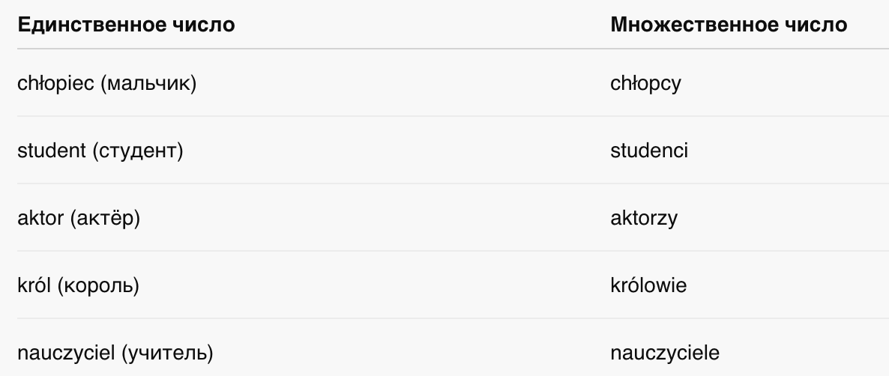
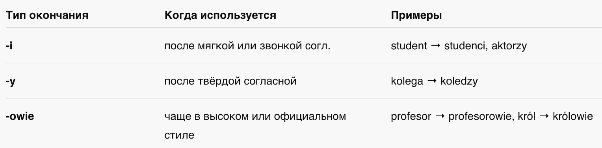
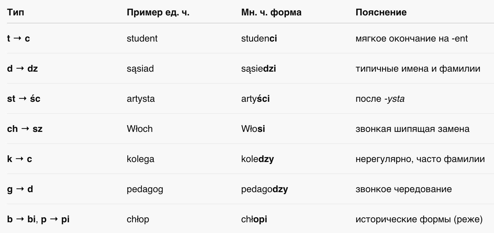
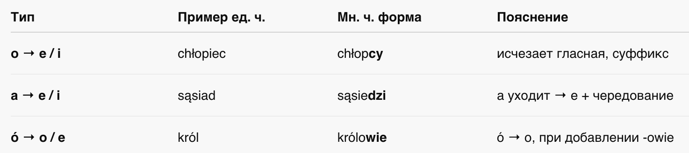
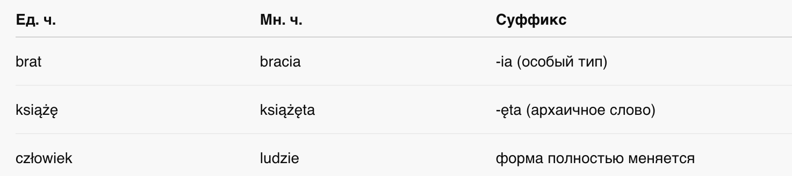

📘 Глава 5: Существительные мужского одушевлённого рода во множественном числе
🧑🎓 Rzeczowniki męskoosobowe w liczbie mnogiej
1. Что такое męskoosobowe?
2. Окончания во множественном числе
3. Чередования (alternacje)
4. Как быстро понять, что использовать?
📍 1. Что такое męskoosobowe?
👉 Мужской одушевлённый род (во множественном числе)
Это существительные, которые:
- обозначают людей мужского пола (или групп с мужчинами),
- во множественном числе требуют особого согласования,
- влияют на форму местоимений, прилагательных, глаголов, числительных.
🧑🤝🧑 Примеры męskoosobowe

✏️ 2. Окончания во множественном числе
Существуют разные типы окончания. Вот основные:

🔁 3. Чередования (alternacje)
При образовании формы множественного числа мужского одушевлённого рода в польском языке часто происходят чередования в корне слова. Это касается согласных и гласных, а иногда и форм всей основы.
🔹 1. Чередования согласных (alternacje spółgłoskowe)

🔹 2. Чередования гласных (alternacje samogłoskowe)

🔹 3. Суффиксы во множественном числе
Иногда к основе добавляется не только окончание, но и новый суффикс, изменяющий звучание:

🔹 4. Сложные и нерегулярные формы

🧠 Как запомнить?
- 📌 Большинство существительных мужского рода, обозначающих людей, во множественном числе образуют форму на -i
- 📌 После шипящих (cz, sz, ż, dż) → -e или -owie
- 📌 Имена профессий или статуса → часто принимают окончание -owie
- Если слово заканчивается на -t, -d, -st, -ch, -g — скорее всего будет чередование.
- После суффиксов -ent, -ista, -ad, -log → чаще -i, и с чередованием.
- Слова типа brat, książę, człowiek — нужно просто запоминать как исключения.
📚 Примеры в предложениях
- Student → Studenci przyszli na wykład.
- Sąsiad → Sąsiedzi rozmawiali ze sobą.
- Artysta → Artyści wystąpili na scenie.
- Brat → Bracia mieszkają razem.
- Człowiek → Ludzie są różni.